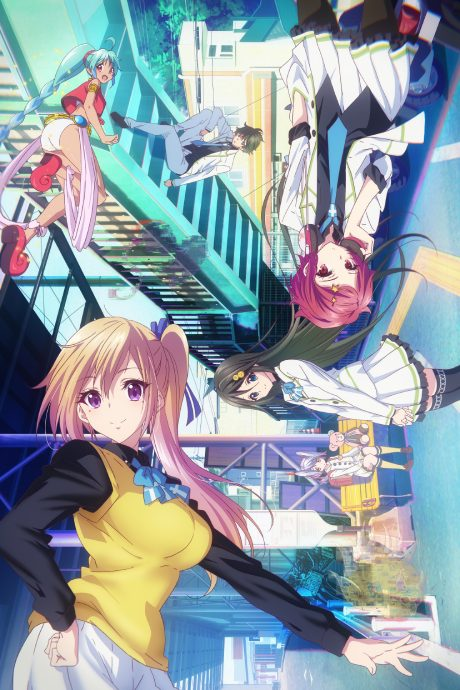
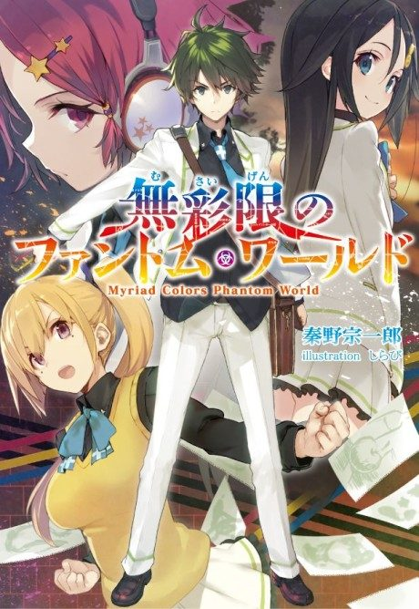
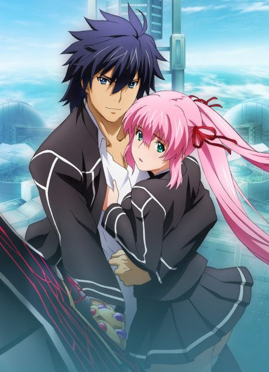

Myriad Colors Phantom World
無彩限のファントム・ワールド
In a world where phantoms appear after a chemical accident, Haruhiko and his friends hunt them using special powers.
We haven't found where the anime ends in the light novel yet.
6.5AniList score
—Animeter, no votes yet
13episodes
Rate it or report where you stopped
Anime finished. Where does the story go next?
StatusNo source yet
We looked for where the anime ends in the light novel but found no source we trust yet. The light novel is 3 volumes, finished.
More like Myriad Colors Phantom World
 Unclear7.4
Unclear7.4
 Manga Vol. 107.1
Manga Vol. 107.1
 Original8.3
Original8.3
 Done8.3
Done8.3
 Original7.3
Original7.3
 Manga Ch. 247.2
Manga Ch. 247.2

Manga Vol. 46.1 VN7.1
VN7.1
 Manga Ch. 1818.4
Manga Ch. 1818.4
 Manga Ch. 407.4
Manga Ch. 407.4
 Manga Ch. 228.7
Manga Ch. 228.7
 Done8.4
Done8.4